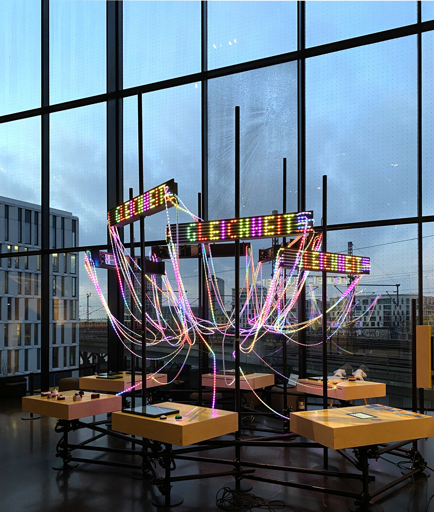
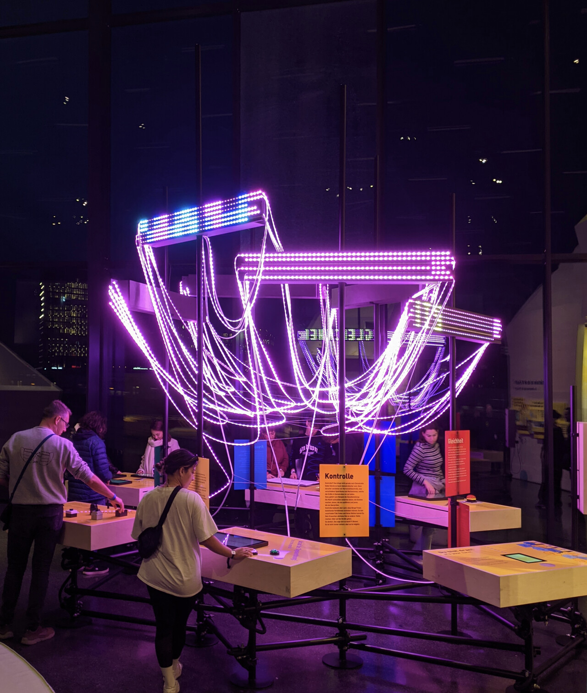
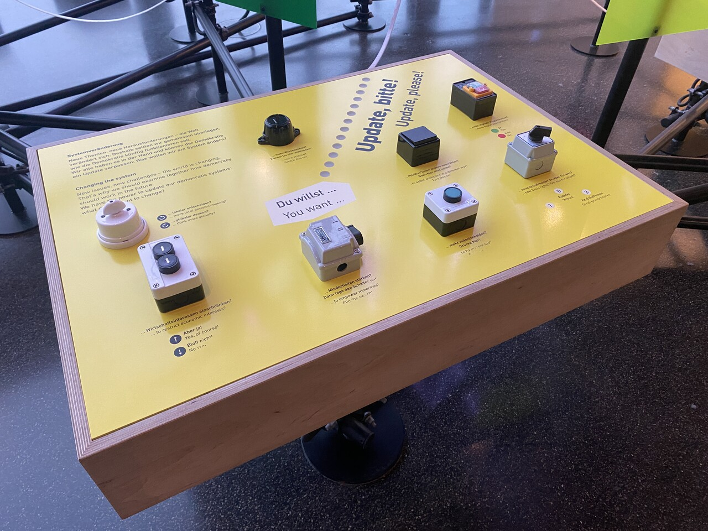
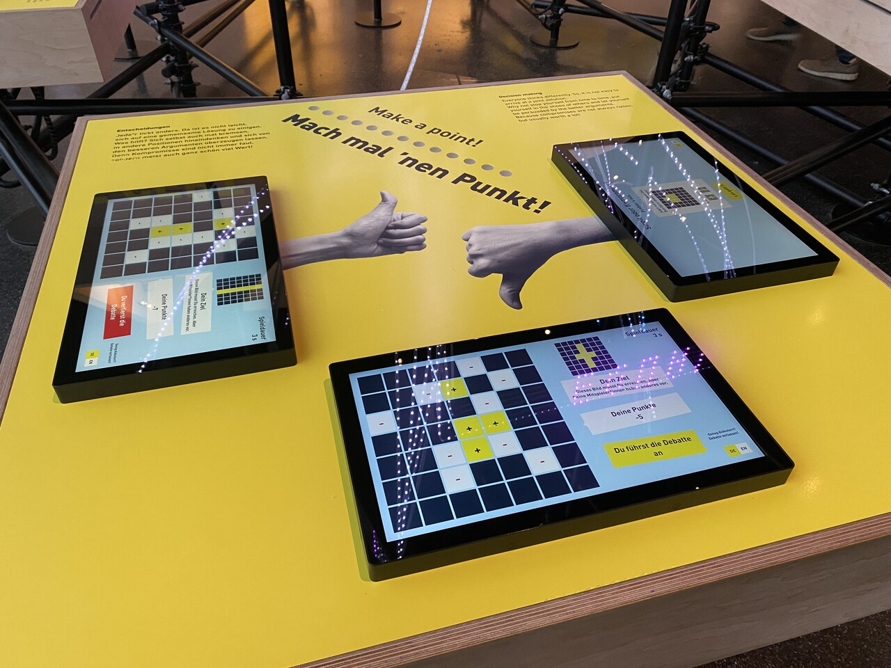
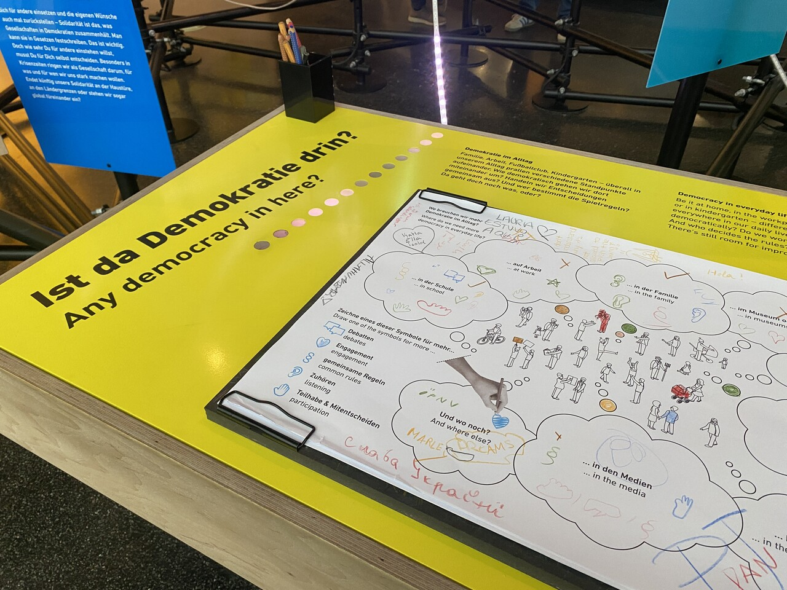
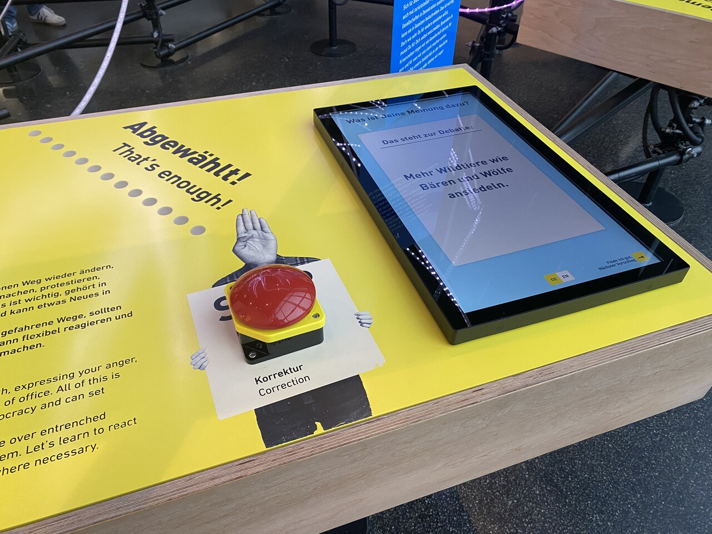
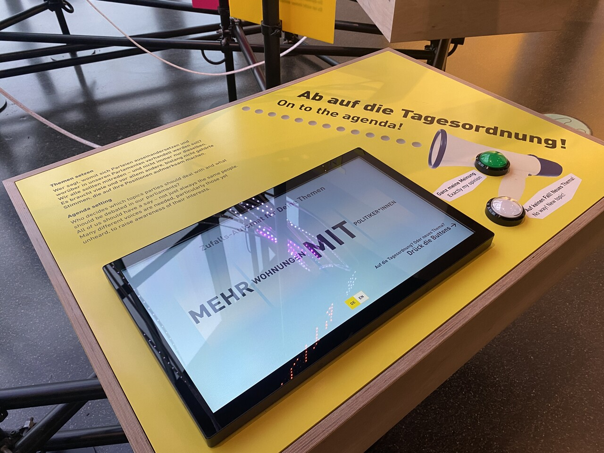
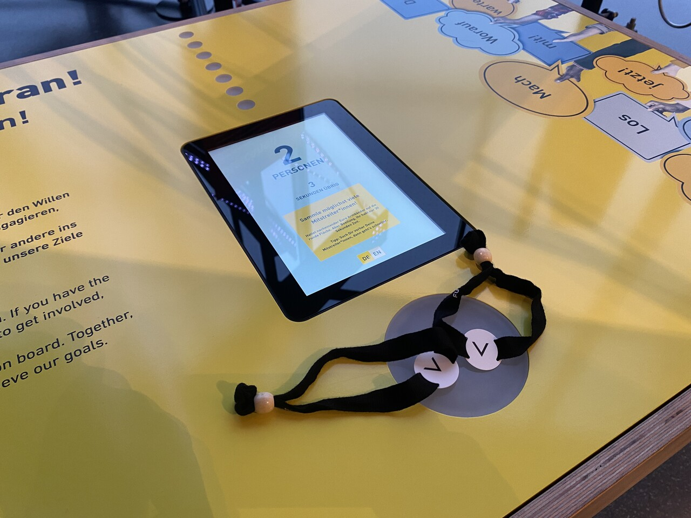
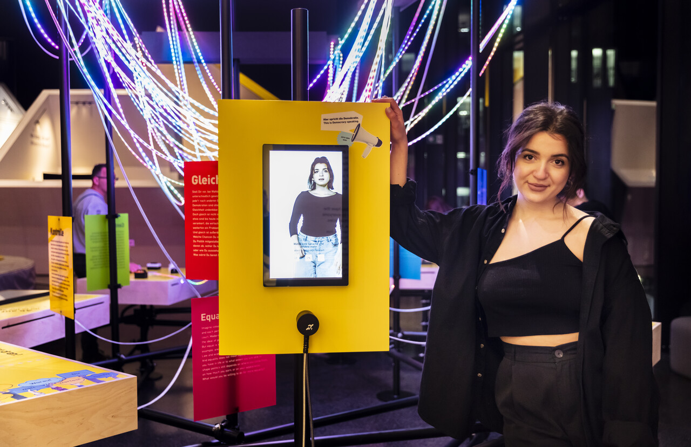

In the Denkraum Mensch area of the Futurium in Berlin, an exhibition space on the topic of democracy was redesigned. We were commissioned to conceive and implement a low‑threshold interactive installation that introduces visitors to the subject.
Democracy is staged as a room‑spanning dynamic light installation.
Interaction at the individual stations sends light pulses into the structure made of LED strips. The more visitors participate, the brighter, more colorful, and more animated democracy appears.


Visitors can engage with six stations to explore the fundamental pillars of democratic action—such as debate, system change, agenda setting, or evaluation—in a playful manner.






At a video station, democracy takes on human traits and addresses the visitors directly.

Im Bereich Denkraum Mensch des Futurium in Berlin wurde ein Ausstellungsbereich zum Thema Demokratie neu gestaltet. Wir wurden damit beauftragt, eine niedrigschwellige interaktive Installation zu konzipieren und umzusetzen, die BesucherInnen an das Thema heranführt.
Die Demokratie wird in Form einer raumgreifenden dynamischen Lichtinstallation inszeniert.
Die Interaktion an den einzelnen Stationen sendet Lichtimpulse in die Struktur aus LED-Bändern. Je mehr BesucherInnen sich beteiligen, desto heller, bunter und bewegter erscheint die Demokratie.
BesucherInnen haben an 6 Stationen die Möglichkeit, sich mit Grundpfeilern des demokratischen Handelns wie Debatte, Veränderung des Systems, Agenda Setting oder Evaluation spielerisch auseinanderzusetzen.
An einer Videostation nimmt die Demokratie menschliche Züge an und spricht die BesucherInnen direkt an.
Leistungen
Konzept, Objektgestaltung, Interaction Design, UI/UX, Programmierung, Planung, Bauaufsicht
Team
Jens Wunderling, Patrick Kochlik, Felix Müller, Nicolai Kudielka, Rainer Lendler
Auftraggeber
Futurium gGmbH, Berlin
Fotos
© Futurium / David von Becker
Services
Concept, object design, interaction design, UI/UX, programming, planning, construction supervision
Team
Jens Wunderling, Patrick Kochlik, Felix Müller, Nicolai Kudielka, Rainer Lendler
Client
Futurium gGmbH, Berlin
Photos
© Futurium / David von Becker